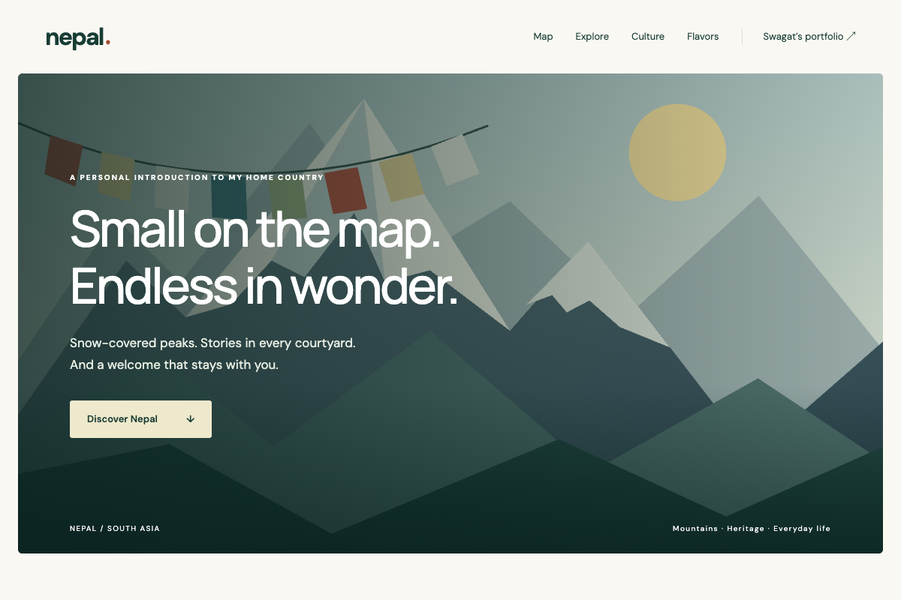
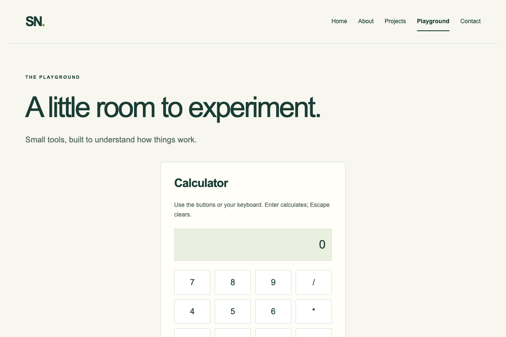

Machine learning & data
Tabular ML, forecasting, and analysis
- pandas
- scikit-learn
- NumPy
- Random Forest
- Gradient Boosting
- Matplotlib
- Seaborn
- Jupyter
- joblib
Open to entry-level SWE, AI & ML Engineer roles
Hi, I'm Swagat Neupane, a software & machine learning engineer.
I'm a Computer Science student at San Francisco Bay University, graduating in December 2026, based in Fremont, CA. I work mostly in Python: cleaning messy data, engineering time-based features, and evaluating models chronologically so the results hold up on data the model hasn't seen.
Mean absolute error per scored item-day. Lower is better.
About
I grew up in Nepal and came to the Bay Area to study computer science. Along the way I found that the part of ML I enjoy most is the unglamorous part: working out what the data actually says before trusting any number a model produces.
On my team capstone, RestroPilot, I own the machine-learning work. That means reconciling raw order exports, designing features that only use past information, comparing every model against a simple baseline, and packaging the result so the application can load it safely.
I'm looking for entry-level Software Engineer, AI Engineer, or ML Engineer roles. I'm also interested in forward-deployed and full-stack work involving AI.
Preserve source provenance, flag ambiguous rows instead of silently deleting them, and treat missing dates as unknown rather than as zero.
Split train, validation, and test chronologically, tune only on validation, and report results next to a simple baseline.
Publish error metrics with their evaluation scope, and say clearly what a model doesn't support.
Version model artifacts, verify them before loading, and write tests around the inference path.
Skills
These are tools I've used in my own projects and coursework on GitHub. Highlighted items are the ones I've used most.
Tabular ML, forecasting, and analysis
How I build and evaluate models
Languages I write code in
Testing, data storage, and delivery
Highlighted = used most in my projects
Projects
Each project is labeled with its status and, for team work, the part I own.
RestroPilot is a team capstone for restaurant operations. I own the machine-learning part: a Random Forest that forecasts each menu item's daily recorded quantity from historical takeaway orders.
Research model trained on 2017–2019 data. It predicts recorded quantities, not verified demand, and is not deployed to production. The team repository isn't public.
Workflow
A Jupyter notebook exploring how pollution, socioeconomic, and asthma indicators vary across Bay Area counties.

My first HTML/CSS website, rebuilt as an illustrated introduction to Nepal with filters and a place explorer.

A small JavaScript calculator where button clicks and keyboard input share the same state logic.
Imputation, encoding, and scaling pipelines with SVC and decision-tree classifiers. Some notebooks are still in progress.
SourceMissing values, joins, date parsing, aggregation, and time-series exercises in pandas.
SourceA coursework page explaining spider-web geometry, with an adjustable SVG model.
DemoCase studyA MySQL relational schema for students, instructors, schedules, and registration, with scheduling queries.
Coursework · source not publishedA two-player Bash game with turn logic and input validation.
Coursework · source not publishedExperience
2026
Team project · San Francisco Bay University
High school
Uniglobe Higher Secondary School · Kathmandu, Nepal
Volunteer
Kathmandu, Nepal
Expected December 2026
San Francisco Bay University · Fremont, CA
2019 – 2021
Uniglobe Higher Secondary School · Kathmandu, Nepal
Contact
If you're hiring for an entry-level software, AI, or ML role, or want to talk about one of these projects, email is the best way to reach me.
swagneupane@gmail.com